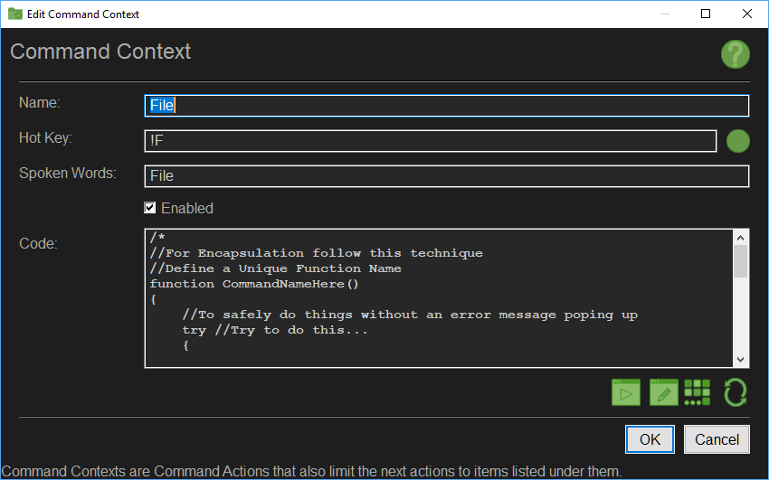

button on the right to activate the keyboard hot key recorder.
button on the right to activate the keyboard hot key recorder.The Edit Command Context Interface allows you to change the Context Name, the Hot Key, the Spoken Sentence and the Code to run when the context is triggered, as well as enabling or disabling the Command Context.

A Command Context works like a Command Action with the added ability to limit subsequent possible actions to whatever actions are located under it in the tree structure, allowing for a contextual set of options, such as, for example, issuing a Edit command can limit the next options to Copy, Paste, Cut and Undo.
This limits the available options to a stricter set of possibilities, therefore reducing reaction time for the system.
It also allows for a more natural work flow as the user can issue a Edit Copy command, then move the cursor and issue the Paste command without having to say Edit again.
A Command Context is triggered by a Hot Key or a Spoken Word or Sentence.
When you hit the hot key or speak the words listed here, the context is enabled and the code is executed like it is for the Command Action. This allows you to prep for the possible sub actions, such as reseting variables and so on.
While a Command Context Limits the subsequent options to actions located underneath it in the tree structure, it is important to realize that the root Actions in the tree structure as well as the Actions in the Parent branch remain Active!
This allows for the user to switch to another mode without the need to for him to cancel the current context explicitly, which would be very annoying.
The drawback is you cannot have a contextual set of options that are identical to options available in the root or in the parent branch.
Also, addendum to the above mention of the root actions; root usually refers to the root of the tree structure, usually the application branch, but may also refer to a parent branch down the structural hierarchy that is a Window Context. If the Command Context is located under a Window Context, the root is the Window Context.
If there are no Actions found under a Command Context, the speech detection will not be added for it in the speech rules.
Specify the name for the Command Context as it would appear in the tree-view.
Specify the hot key to that will trigger the Command Context.
Use the
The possible Hot Key Combinations are Listed on the AutoHotKey Help Reference Page Here and Here.
Specify what words or sentences will trigger the Command Context.
This can be a single word like Reload or a sentence like Reload Primary Weapon
You may define multiple sentences or words for this Context by separating each possible option by the pipe | character, for example Reload|Reload Primary Weapon|Reload Primary.
Note that the speed and reliability of the recognition system relies on how you define these spoken commands. It helps to have them easily distinguishable from one another. For Example if you have a Command Fire and you have a similar sounding command like Five, then there is a good chance there will be trouble identifying what has been said between those two choices, resulting in longer processing or error of choice.
Another thing to consider is the number of syllables in your sentence or word. Long story short, single syllable words do poorly.
Specify if the Command Context is enabled. Disabled Command Context will be ignored by the system and so will any Commands located under it in the tree structure.
Specifies the code to run when the Command Context is activated. You can call any function or use any variables defined by the code in the Application Interface, or any of the code that was previously ran by items up the context chain. This is also a good place to reset variables that the actions under this context would need.
Use the 
Use the 
Use the 
Use the 
Applies the changes and closes the dialog box. Some changes may require a restart.
Cancels the changes and closes the dialog box.